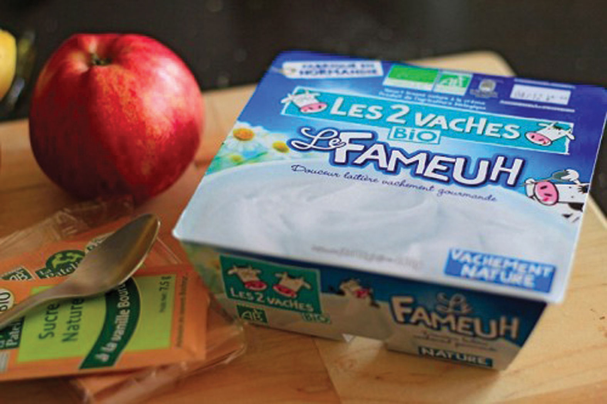

From its inception, Stonyfield was founded with a sustainability mission. This mission has persisted throughout the company’s history. It commits the company to healthy food, healthy people, healthy planet, and healthy business.
In 1979, Samuel Kaymen, a former engineer and self-declared “back-to-the land” hippie, and his wife Louise started the Rural Education Center (TREC) in Wilton, New Hampshire. TREC was a nonprofit organization devoted to teaching homesteading skills with an emphasis on organic food production. The Kaymen’s founded TREC to help turn around the struggling New England dairy industry and halt the decline of family farms and as a response to the rising industrialization of the food system. Samuel, one of the country’s early authorities on organic agriculture, had perfected a recipe for an organic yogurt the previous year. His organic yogurt tasted better than other yogurts available on the market and would form the basis for the Stonyfield brand.
In 1982, Gary Hirshberg was recruited by Samuel for the TREC’s board of trustees to help generate financial support. Gary had previously served as a water-pumping windmill specialist and also worked for the Massachusetts-based nonprofit ecological advocacy group known as the New Alchemy Institute, which focused on organic agriculture and renewable energy systems. When Gary joined, the center and farm were deep in debt and close to bankruptcy. Under Gary’s leadership, TREC decided to expand farming at the center and to produce organic yogurt to sell to support the operations of the center.
Gary said of the decision to choose to enter the yogurt business, “Samuel made this really incredible yogurt. It was really the best yogurt I had ever eaten. So we were all sitting around talking about how we were going to make some money and somebody said ‘why don’t we sell the yogurt?’ We all kind of laughed. He also made wonderful beer and pickles, but eventually we decided to go with the yogurt.”David Phillips, “Bringing the Cultural Revolution,” Business Library, December 2003, http://findarticles.com/p/articles/mi_m3301/is_12_104/ai_111508193/pg_2/?tag=content;col1.
In 1983, the company Stonyfield Farm was born in an old barn at the center. Samuel was appointed chairman and Gary was named CE-Yo (chief executive of yogurt). The company was started with a $35,000 loan from the Institute for Community Economics with $25,000 coming from the Sisters of Mercy. On April 9, 1983, Stonyfield produced their first fifty-gallon batch of yogurt.
A Trip to Disney WorldGary Hirshberg, Stirring It Up: How to Make Money and Save the World (New York: Hyperion, 2008), 2–4.
In 1982, Gary Hirshberg, while serving as the executive director for the nonprofit the New Alchemy Institute, went to visit the recently opened Disney World’s Epcot Center. This experience changed how Gary viewed influencing the general public on environmental issues. At Epcot Center, he observed twenty-five thousand people walking through the Kraft artificial cheese exhibit, which featured a technologically driven view of farming including test tube–based plants (a stark contrast to the ecologically driven agriculture solutions taught at the New Alchemy Institute).
Gary was struck that the daily attendance at the Kraft exhibit was equal to the annual visits at the New Alchemy Institute. This experience led Hirshberg to change his view on environmental education and ultimately, he concluded that, for him personally, he would be more effective in spreading environmental awareness in a business context. The incorporation of Stonyfield Farm would provide him the opportunity to test this in the real world.
Profile of a Social Entrepreneur: Gary Hirshberg
Gary Hirshberg serves on several corporate and nonprofit boards including Applegate Farms, Honest Tea, Climate Counts, Stonyfield Europe, Glenisk, and the Danone Communities Fund. He also is the chairman and cofounder of Stonyfield Café, a natural fast food restaurant company.
He has received eight honorary doctorates and was named a Gordon Grand Fellow at Yale University in 2009 and was named one of “America’s Most Promising Social Entrepreneurs” by BusinessWeek. Gary was also featured in the 2009 documentary Food, Inc.“CSR Heroes: Gary Hirshberg of Stonyfield Farm,” Just Means (blog), April 5, 2010, accessed August 2, 2011, http://www.justmeans.com/CSR-Heroes-Gary-Hirshberg-of-Stonyfield-Farm/12086.html. Also see Will Marre, “Stonyfield Farm’s Gary Hirshberg Is a True Pioneer of Sustainability and Giving Is Winning,” Giving Is Winning (blog), December 30, 2010, accessed August 2, 2011, http://willmarre.com/blog/stoneyfield-farms-gary-hirshberg-is-a-true-pioneer-of-sustai nability-and-giving-is-winning.
Within the first year, Gary and Samuel decided to close TREC, which ironically the business was originally meant to support, and focus their energies on building a socially driven business—selling healthy food that was healthfully produced. For the first seven years, Samuel and Gary’s families lived on-site in adjacent apartments in the 1852 Wilton farmhouse. The house and barn provided office space and the “Yogurt Works” (the manufacturing facility).
Making their social mission a reality while building a profitable business proved to be extremely challenging for the two social entrepreneursIndividuals who act as an agent of change for the society. They take innovative approaches to existing systems to develop sustainable solutions for the purpose of changing society for the better. and their families. But with the deep and passionate commitments of the two founders working long hours, family support, and extensive grassroots marketing, the fledging company was able to survive.
Like many entrepreneurial start-ups, the business was built with a lot of family equity, the two families did most of the work themselves—milking cows, making yogurt, calling customers, and delivering the yogurt. Louise Kaymen noted, “Without the Kaymen kids doing cow chores, making yogurt, shrink-wrapping orders and getting up at all hours of the night, we would not have been able to ‘hang in there’ in those first years.”“Our Story in a Nutshell / Milestones,” Stonyfield Farm, Inc., http://www.stonyfield.com/about-us/our-story-nutshell/milestones. By the end of 1983, Stonyfield sales were $56,000 and the company was selling at a rate of 150 cases of yogurt per week.
Early Marketing: Yogurt or Camel Manure?Gary Hirshberg, Stirring It Up: How to Make Money and Save the World (New York: Hyperion, 2008), 89–90.
Gary found creative and low-cost ways to market Stonyfield’s yogurt. For example, when Andy Moes, radio cohost of Boston’s well-known “Joe and Andy Show,” told his audience he’d rather eat camel manure than yogurt (which at that time was not as popular a food as it is today), Gary saw this as an opportunity and stopped by nearby Benson’s Animal Farm in New Hampshire to collect some camel manure. Gary and his wife Meg drove down to the radio station with a packed quart of yogurt and a packed quart of camel manure and demanded that Andy choose to eat one. Andy eventually ate the yogurt and conceded, “I admit it. This yogurt does taste better than camel manure.” Stonyfield received instant airplay and had found a creative way to not only sell yogurt but also get their message of the health benefits of yogurt across to a wide audience.
Later Marketing
Stonyfield thrived on innovation. It constantly looked for innovative products that would drive sales and bottom line profit. It was one of the first companies to exploit market segmentation for its yogurt product line. Stonyfield segmented its markets by age, gender, demographics, and psychographic factors. It educated customers on the impact of its products and company actions on people’s health and the environment.
For example, Stonyfield product categories have included yogurts formulated specifically for women, infants (YoBaby), and kids (Planet Protectors low-fat yogurt). The company has introduced new yogurt recipes and limited edition yogurts, such as low-fat eggnog yogurt, breakfast and desert yogurts, and frozen yogurts. Through its innovative marketing and product development, Stonyfield has been able to be an industry leader in taking yogurt from a side dish, consumed by a small number of health food “junkies,” to an everyday food for the American diet.“Our Story in a Nutshell / Milestones,” Stonyfield Farm, Inc., http://www.stonyfield.com/about-us/our-story-nutshell/milestones.
In response to growing production, the company decided in 1984 to stop on-site production of milk, sold its herd (now up to nineteen cows), and switched to purchasing milk from local farmers. The company ended 1985 with ten employees, new yogurt flavors, $317,200 in sales, and production of 1,100 cases per week.
Demand for the company’s organic yogurt was growing faster than the company’s ability to supply it, so in 1986, the company relocated from the farm and contracted with a copacker in Massachusetts. Shortly thereafter, the copacker went bankrupt and the bank seized the packer’s and Stonyfield’s assets, including equipment, raw materials, and finished product. This event almost ruined the company, but by accessing some additional family funds, Samuel and Gary restarted yogurt production back in the old barn in Wilton. The company managed to maintain their customer relationships but Stonyfield ended the year with a loss of $400,000 and was essentially bankrupt. However, Gary was able to secure a Small Business Association–backed bank loan and convinced private investors (family, friends, and others) to further invest in Stonyfield. Meg Hirshberg recalled that “during the nine painful years it took us to reach profitability, we endured countless disasters, mishaps, and near-death experiences. That meant there were countless times we could have rid ourselves of the misery we called a business.”
With the infusion of capital in 1988, Stonyfield production and operations moved into a twenty-one-thousand-square-foot facility in Londonderry, New Hampshire. This proved to be a very good business decision and a turning point for the company. Stonyfield ended 1989 with forty-two employees, $2.5 million in sales, and production of 8,050 cases of yogurt per week. By 1990, Stonyfield had made number 113 on Inc.’s list of the five hundred fastest growing companies in the United States, and the following year, Stonyfield’s annual sales had grown to $56 million.
In 2001, Samuel retired from Stonyfield (but still remained on the board of the company) as the company took a new strategic direction by forming a partnership with Paris-based Groupe Danone (Danone), the largest fresh dairy company in the world. This meant that Gary Hirshberg was in charge of the company.
Danone, a $17 billion multinational company in 2001, whose brands included Evian bottled water and Danone/Dannon yogurt, initially purchased 40 percent of Stonyfield shares. This was followed with share purchases in late 2003 and again in 2006, with the additional share purchases bringing Groupe Danone ownership to an 85 percent interest in Stonyfield.
This was a strategic purchase that benefited both companies and was a unique partnership. Gary Hirshberg still remained chairman, president, and CEO with relatively few restrictions on his ability to lead the company and Danone eventually ended up with near full ownership of a profitable and growing subsidiary. Hirshberg, in a unique strategic arrangement to maintain his status as Stonyfield’s leader and main decision maker, retained 60 percent of voting shares in the company.
Gary discussed that the relationship with Danone involved three things: “I set agreed-upon growth and profit targets that we both agree to; I agreed that I wouldn’t expand into any other segments other than yogurt without their approval. And also, any capital improvements over $1 million, I needed their approval. But otherwise, I’m free to do whatever I want.”
Frank Riboud, Groupe Danone’s chairman and chief executive officer, said, “We want Stonyfield to leverage Groupe Danone’s strengths while retaining its own unique culture and management. We believe it is important for Stonyfield to continue to grow its market share while maintaining its commitment to social responsibility.”
Stonyfield’s Shareholders
By 2006, Stonyfield had grown into a $263 million business with 297 private investors. A large number of the company’s private investors—many of whom were friends, family, and employees—were eager to realize a return on their investments after many years of investment. The Danone purchase provided a desired exit strategy for Stonyfield’s investors.
Gary Hirshberg had previously considered an initial public offering (IPO) for Stonyfield or selling shares directly, but neither of these financing options provided him the ability to meet financial obligations to investors without giving up control of the company. He courted twenty different companies until he finally found the right fit with Danone. Under the agreement with Danone, he could sell a majority stake while simultaneously maintaining control of the company. This was a breakthrough agreement—one that critics thought would never be possible—and is referred to in merger and acquisition circles as the “Stonyfield deal.”
At the time, Gary’s wife, Meg, expressed a sense of relief regarding Danone’s investment. Meg’s mother had invested considerably over time to help her son-in-law’s business survive and then grow. Meg said, “My mother is now at ease in her retirement. Her risky investment in Stonyfield secured college educations for all her grandchildren. Our family is as close as ever and feels great collective satisfaction at having been part of building a successful business.”
Gary noted that “Danone’s investment provided Stonyfield investors a healthy return on their investments. It also gave Stonyfield the knowledge to make its business more efficient, to launch in other countries, to continue to grow its mission-driven initiatives and to participate in the rapidly growing organic and natural dairy industry segment.”Meg Cadoux Hirshberg, “Brother, Can You Spare a Dime? Family Money Can Be a Lifeline: At the Very Same Time, It Can Be the Most Expensive Money in the World,” Inc. Magazine, November 2009.
The initial buyout of Stonyfield by Groupe Danone did not include direct investment in the company, it only was a purchase of selling investor’s shares in the company and therefore resulted in no real additional financial resources for Stonyfield. The purchase and partnership did allow Danone to share knowledge about increasing production and market share with Stonyfield.
It was not until 2006 that the synergistic relationship between Danone and Stonyfield became more readily apparent. Danone began to invest considerable resources in the company and approved $66 million to expand Stonyfield’s plant in Londonderry to keep up with growing product demand.
Danone had a significant role in Stonyfield entering the global marketplace in 2006. The European organic food market was growing rapidly, from €10 billion in 2005 to €18.4 billion in 2009.“BioFach Session ‘The European Market for Organic Food,’” Organic World, http://www.organic-world.net/news-organic-world.html?&tx_ttnews%5Btt_news %5D=463&cHash=706047cd74d37a75b3535c3f8396655d; David Phillips, “An American in Paris: Stonyfield France Launches ‘Les Deux Vaches’ Brand with Grassroots Environmental Messages,” Business Library, October 2006, http://findarticles.com/p/articles/mi_m3301/is_10_107/ai_n16808775. Danone and Stonyfield worked together to create a subsidiary, Stonyfield Europe as an independent entity within Groupe Danone’s Fresh Dairy Products division. Franck Riboud, the chairman and chief executive officer of Danone, stated that “the European market for organic dairy products is growing, but it remains a fairly discreet presence. With Stonyfield Europe, we hope to capitalize on the success and unique expertise of Stonyfield Farm to speed up its development.”
Upon its creation, Stonyfield Europe immediately announced the acquisition of more than a third of family-owned Irish firm Glenisk, a recognized leader in organic dairy in Europe. Glenisk was established in 1987 and was owned by its founding family. The firm’s organic milk and yogurts had sales growth of more than 10 percent when Stonyfield Europe acquired a portion of it in 2005.Lorraine Heller, “Danone and Stonyfield Create European Organic Dairy Firm,” Food Navigator, June 20, 2006, http://www.foodnavigator.com/Financial-Industry/Danone-and-Stonyfield-create-European-organic-dairy-firm.
Danone and Stonyfield also created Stonyfield France. Stonyfield France’s goal was to create a brand suited to French tastes consistent with Stonyfield’s successful “healthy people, healthy planet” messaging. The French market had tremendous potential as French consumers eat four times as much yogurt as American consumers; however, organic yogurt was viewed as appealing to only a small niche market of more socially minded French consumers. The result was “Les Deux Vaches des Fermiers du Bio” (the two cows of organic farmers); the website is http://www.les2vaches.com.David Phillips, “An American in Paris: Stonyfield France Launches ‘Les Deux Vaches’ Brand with Grassroots Environmental Messages,” Business Library, October 2006, http://findarticles.com/p/articles/mi_m3301/is_10_107/ai_n16808775.
Figure 13.2
Source: Mon Bio Cocon, http://www.monbiococon.fr/2011/11/21/ce-yaourt-nature-bio-il-est-vachement-fameuh/.
Danone not only helped Stonyfield expand overseas but also helped in North America with the creation of Stonyfield Canada. In 2006, Stonyfield Canada opened a head office and a manufacturing plant in Boucherville, Quebec. All the organic milk for Stonyfield Canada comes from organic farms in Canada and their products are distributed through a wide array of retailers throughout Canada, including Walmart, Loblaws (the largest food retailer in Canada), and Sobeys (the second-largest food retailer in Canada).
Continued growth in the US market and the expansion of Stonyfield globally helped Stonyfield grow significantly—from a $73 million company in 2001 to a $366 million company in 2010. Throughout this period of high growth the company kept to its sustainability mission of offering healthy food to enhance the health of people while promoting a healthy planet. There was strong synergy, as the high growth was a result of the sustainability focus, and the sustainability mission benefited from the growth.